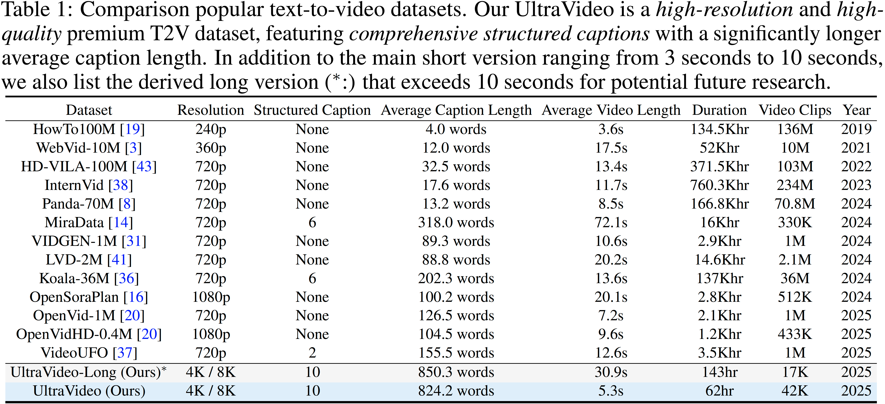

High-lights
1) First open-sourced UHD-4K/8K video datasets with comprehensive structured (10 types) captions.
2) Native 1K/4K videos generation by UltraWAN.



The quality of the video dataset (image quality, resolution, and fine-grained caption) greatly influences the performance of the video generation model. The growing demand for video applications sets higher requirements for high-quality video generation models. For example, the generation of movie-level Ultra-High Definition (UHD) videos and the creation of 4K short video content. However, the existing public datasets cannot support related research and applications. In this paper, we first propose a high-quality open-sourced UHD-4K (22.4% of which are 8K) text-to-video dataset named UltraVideo, which contains a wide range of topics (more than 100 kinds), and each video has 9 structured captions with one summarized caption (average of 824 words). Specifically, we carefully design a highly automated curation process with four stages to obtain the final high-quality dataset: i) collection of diverse and high-quality video clips. ii) statistical data filtering. iii) model-based data purification. iv) generation of comprehensive, structured captions. In addition, we expand WAN to UltraWAN-1K/-4K, which can natively generate high-quality 1K/4K videos with more consistent text controllability, demonstrating the effectiveness of our data curation. We believe that this work can make a significant contribution to future research on UHD video generation.
1) First open-sourced UHD-4K/8K video datasets with comprehensive structured (10 types) captions.
2) Native 1K/4K videos generation by UltraWAN.
@article{ultravideo,
title={UltraVideo: High-Quality UHD Video Dataset with Comprehensive Captions},
author={Xue, Zhucun and Zhang, Jiangning and Hu, Teng and He, Haoyang and Chen, Yinan and Cai, Yuxuan and Wang, Yabiao and Wang, Chengjie and Liu, Yong and Li, Xiangtai and Tao, Dacheng},
journal={arXiv preprint arXiv:2506.13691},
year={2025}
}